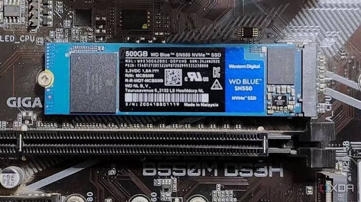
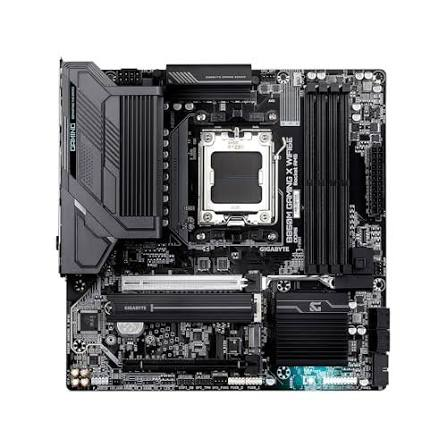
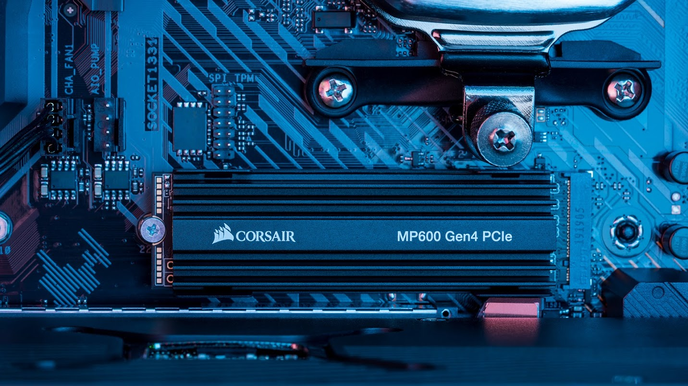
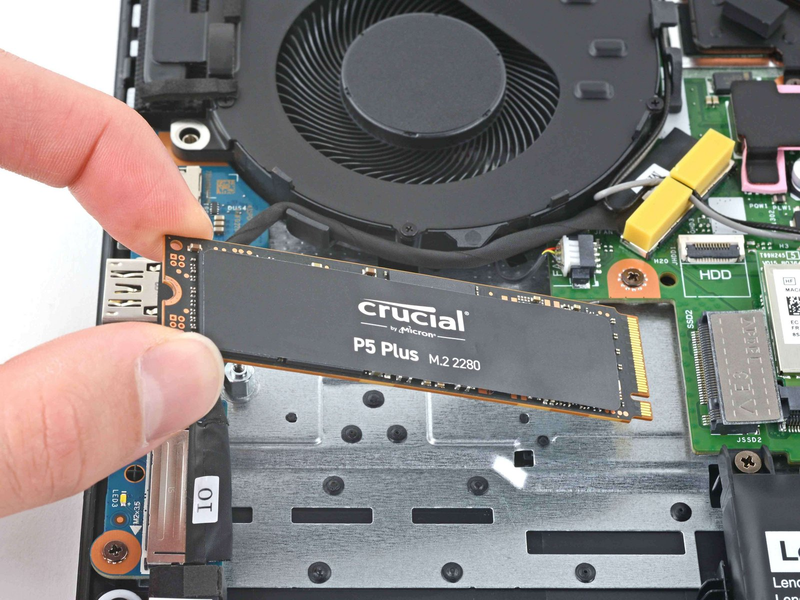
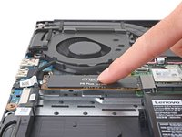
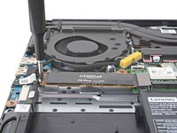

Pre-installation checklist
Proper techniques & common issues
Step by step guide
Before installing an SSD, you need to make sure you understand the ssd models and ports you are working with
Once you understand the technical considerations, there are a couple ways the installation can go wrong, but are usually fixable with proper technique.
Finally, follow the order exactly as shown. Refer to earlier sections of this guide if there are any issues.

Featured Content
My purpose is to inform people how to install an M.2 nvme ssd.
I will go over things they need to keep in mind before starting the project,
the proper techniques and conventions, common failure points and how to solve them,
and a step-by-step process from inserting the ssd into the port
and fixing it into place with a screw and or standoff.
Pre-installation checklist

- An M.2 2230-2280 PCIe NVMe SSD with an M Key
- A motherboard or port that supports your M.2 SSD Length and key. key shape will correspond to the sections inside your motherboard socket
- Including but not limited to Standoff & Screw
Proper techniques & common issues

- You will need to make sure your hands are clean and dry and computer is turned off before operating inside the machinery.
- Installation will involve gently easing the ssd into place, not forcing it into the socket.
- When tightening a screw or standoff, do not overtighten.
- If SSD is not lying flat after installation, it could because you inserted the screw/standoff incorrectly.
Step by step guide
|
   |
Call to Action
Want to learn how to install more computer components?
Learn More